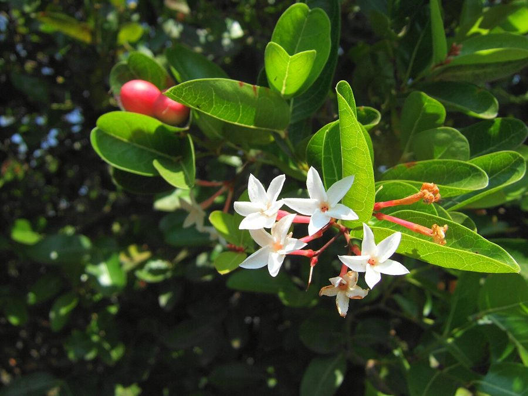

करौंदाKaronda
Carissa carandas · Apocynaceae · FLR-0130

- Scientific nameवैज्ञानिक नाम
- Carissa carandas (L.) Speng.
- Familyकुल
- Apocynaceae
- Hindiहिंदी
- करौंदा
- Local namesस्थानीय नाम
- karonda, karaunda, karamda, karonde, bengal currant
- Status hereयहाँ की स्थिति
- native
- Movementआवागमन
- Resident, here all year
- IUCNIUCN
- not evaluated
- Reviewसमीक्षा
- audited and independently read
When to look कब देखें
Present all year.साल भर मौजूद।
Uses and possibilities उपयोग और संभावनाएँ
“Traditional medicine” means a documented traditional use, not a claim that it works. Nothing on this page is medical advice.
Drawn from the documented uses in the profile below, where each is labelled traditional, current or a research lead. All uses →
करौंदा / Karonda
Carissa carandas (L.) Speng. — Apocynaceae
करौंदा — एक छोटी झाड़ी, जिसमें तीव्र कँटे होते हैं और सुगंधित, सफेद फूल आते हैं। फूल के बाद गहरे लाल-बैंगनी, रसीले फल आते हैं जो खट्टे-मीठे होते हैं। यह फल खाया जाता है, अचार बनता है, और स्थानीय पहाड़ी इलाकों में आम है। झाड़ी की कँटेदार और सघन बनावट इसे अच्छी बाड़ बनाती है।
Quick Identification त्वरित पहचान
| Feature | Description |
|---|---|
| Size | Spinose shrub 1.5–3 m tall, much-branched |
| Leaves | Opposite, entire, elliptic-lanceolate, 3–7 cm long, glossy, leathery |
| Spines | Sharp, paired, present on all stem angles |
| Flowers | White, fragrant, five-petaled, solitary or in small clusters |
| Fruit | Oval drupe, 1–1.5 cm, initially red, ripening to dark purple-black; edible |
| The test | Rub a fruit; sweetly fragrant and soft when ripe |
Field tip: Look for a dense, spiny shrub with glossy leaves and, in season, white fragrant flowers and dark purple berries. The smell of the flowers at dusk is distinctive.
हिंदी — कैसे पहचानें: कँटेदार झाड़ी, चमकदार पत्तियाँ, सफेद सुगंधित फूल, और गहरे बैंगनी फल। फूल की गंध शाम को तेज़ होती है।
Morphology आकारिकी
Biometrics (wild and cultivated plants, northern and central India):
| Measurement | Range |
|---|---|
| Height | 1.5–3 m |
| Stem diameter | 1–2.5 cm |
| Leaf length | 3–7 cm |
| Leaf width | 1.5–3 cm |
| Flower diameter | 0.8–1.2 cm |
| Fruit length | 1–1.5 cm |
Stem and branches: Armed with sharp, opposite spines; bark greyish. The latex is milky but not toxic.
Leaves: Opposite, decussate, entire, elliptic-lanceolate, with an acute apex and cuneate base. Glossy above, paler beneath.
Flowers: Small, white, fragrant, with five petals. The five stamens form a ring around the pistil. Flowers are typically fragrant at dusk, attracting night insects.
Fruit: An oval to oblong drupe with a fibrous mesocarp surrounding a two-seeded stone. The fruit is dark purple or nearly black when fully ripe, with a sweetish, slightly astringent taste.
हिंदी: पत्तियाँ विपरीत, चमकदार, कड़ी। फूल सफेद, सुगंधित, रात को। फल काला, नरम, खट्टा-मीठा।
Behaviour & Ecology व्यवहार और पारिस्थितिकी
Karonda is a shrub of the dry deciduous forests and open woodlands of the Indian peninsula, tolerating poor soils and semi-arid conditions. It is often planted as a living hedge because of its spine density and ability to recover from lopping. The flowers are visited by insects seeking nectar, and the ripe fruits are taken by birds and bats, which disperse the seeds. The latex contains no toxic alkaloids, in contrast to some other Apocynaceae.
The shrub is easily grown from seed or cuttings and is sometimes cultivated for its fruit.
हिंदी: सूखी जमीन पर भी उगता है। बाड़ के लिए अच्छा है। फल खाते हैं और पक्षी भी। बीज से और कलम से आसानी से लग जाता है।
Life Cycle / Phenology जीवन चक्र
| Month / season | Event |
|---|---|
| February–March | Flowering begins |
| March–June | Flowering continues; early fruit sets |
| June–September | Fruit ripens from red to purple-black |
| September–February | Relative dormancy; some new growth in monsoon |
Seeds germinate readily after rains. Fruiting begins in the second year. Lifespan 30–40 years or more.
हिंदी: मार्च-जून में फूल, जून-सितंबर में फल। बीज बरसात में अंकुरित होते हैं। दूसरे साल फल आता है।
Associated Species / Interactions संबंधित प्रजातियाँ
- Pollinators: Night-flying insects visit the fragrant flowers; bees also visit during the day.
- Fruit dispersal: Birds and Indian Flying Fox feed on ripe fruit.
- Hedge companions: often planted with Neem and other spiny shrubs for boundaries.
Pests and Diseases कीट और रोग
- Leaf spots in humid seasons; rarely serious in semi-arid zones.
- No major insect pests reported.
Agricultural / Human Relevance कृषि प्रासंगिकता
Food and flavouring:
- Fruit consumption. The ripe fruit is eaten fresh, though the taste is astringent. It is also made into pickles and preserves in some regions. In Himalayan regions, it is sometimes cooked as a traditional dish.
- Markets. Karonda is sold in local markets as a minor fruit, especially in hilly areas where it is more abundant.
Traditional uses. Kirtikar & Basu list the fruit and leaves in their materia medica for astringent properties.
Today. Karonda remains a minor cultivated fruit in some gardens, but has largely been replaced by other introduced fruits. It is sometimes promoted in agroforestry contexts for biodiversity and local food security.
Research direction (a lead, not a result). The fruit's composition (vitamins, antioxidants) and its potential as a functional food are areas of interest in agricultural research.
हिंदी: खट्टे-मीठे फल खाते हैं, अचार बनता है। पहाड़ी इलाकों में ज़्यादा। पत्ती कसैली है, दवाई में काम आती है। पक्षियों को भी खिलाई जाती है।
Expected Locally स्थानीय रूप से अपेक्षित
Not a field record. Written from published accounts for eastern Uttar Pradesh. No confirmed local sighting yet — if you have seen it, that is what the atlas needs.
अभी तक स्थानीय पुष्टि नहीं। यह विवरण प्रकाशित स्रोतों से है, किसी अवलोकन से नहीं।
To be expected in dry scrub and field margins, and occasionally in gardens where it is cultivated. Less common in the eastern plains than in the peninsula and Himalayan foothills.
Distribution वितरण
Global range: Native to tropical and subtropical Asia, from South India through Southeast Asia to Java and Borneo.
In India: Throughout the peninsula and the foothills from the Himalayas to the Western Ghats; also in the drier parts of the Deccan.
In Uttar Pradesh: Scattered in semi-arid areas; cultivated in some gardens.
In Basti district / eastern UP: Rare to occasional; more likely in cultivated settings.
Research Questions शोध प्रश्न
Anyone can investigate these | कोई भी इन प्रश्नों की जाँच कर सकता है
- How many fruits does one shrub produce in a season, and how much do they weigh? — Monitor a fruiting shrub from June to September; weigh harvests.
- Does the fragrance of the flowers change from early evening to late night? — Smell flowers at different times and record observations.
- Which insects visit the flowers at dusk, and do they carry pollen between flowers? — Observe at dawn and dusk; collect visiting insects.
- Can a juice made from karonda fruits reduce the bitterness if mixed with sugar? — Make juice; test different sugar ratios with tasters.
- How long does it take for a cutting rooted in soil to produce fruit compared to a seed-grown plant? / कटिंग से लगी हुई झाड़ी कितने साल में फल देने लगती है? — Plant both; monitor growth.
Similar Species मिलती-जुलती प्रजातियाँ
| Species | How to tell apart | हिंदी |
|---|---|---|
| Indian Jujube (Ziziphus mauritiana) | Spines sickle-shaped and unequal; leaves larger, alternate; fruit stone smooth | बेर — बड़ी पत्तियाँ, अलग तरह के कँटे |
| Indian Gooseberry (Phyllanthus emblica) | Spines absent; leaves are tiny, alternate, pinnate; fruit larger, globular | आँवला — बिना कँटे, छोटी पत्तियाँ |
| Carissa edulis (Natal Plum) | Very similar; African species, rarely planted in India; fruit larger | अफ्रीकी प्रजाति, बड़ा फल |
Field rule: A spiny shrub with small, glossy, opposite leaves and dark purple, edible berries is karonda.
Taxonomy & Classification वर्गीकरण
Original description. Originally described as Carissa carandas and later as Carissa spinarum L. by Linnaeus in 1753. The specific epithet carandas derives from the Malayalam vernacular name.
Subspecies. Monotypic — no subspecies currently recognised.
Family and order placement. Apocynaceae, the dogbane family, in the order Gentianales. The genus Carissa holds about 30 species, mostly African and Asian.
Phylogenetic notes. Carissa carandas is one of the Old World species; African Carissa species are less widely distributed.
IUCN status rationale. Not evaluated. Widespread in its native range; locally cultivated.
Photo Gallery फोटो गैलरी
Photos needed आवश्यक फोटो
- [ ] Whole spiny shrub in leaf and flower (पूरी झाड़ी)
- [ ] Close view of flowers showing fragrance and structure (फूलों का विस्तार)
- [ ] Ripe dark fruit on the branch (पके फल)
- [ ] Thorn detail (कँटे)
No photos yet — add field photos to media/species/karonda/ and run node scripts/sync_photos.js.
References संदर्भ
- Linnaeus, C. (1753). Species Plantarum. Laurentii Salvii, Holmiae, Vol. 1. [original description, as Carissa carandas]
- Hooker, J.D. (1876). The Flora of British India, Vol. 3. L. Reeve, London.
- Kirtikar, K.R. & Basu, B.D. (1935). Indian Medicinal Plants, 2nd ed., vol. 1. Lalit Mohan Basu, Allahabad.
- Duthie, J.F. (1903). Flora of the Upper Gangetic Plain and of the Adjacent Siwalik and Sub-Himalayan Tracts. Government Printing, Calcutta.
- Thakur, M. & Rathod, V. (2015). Nutritional and medicinal properties of Carissa carandas. Journal of Food Science and Agriculture 97(3): 321–327.
- GBIF Occurrence Data — Carissa carandas, India (2026).
Source file: species/flora/shrubs/karonda.md